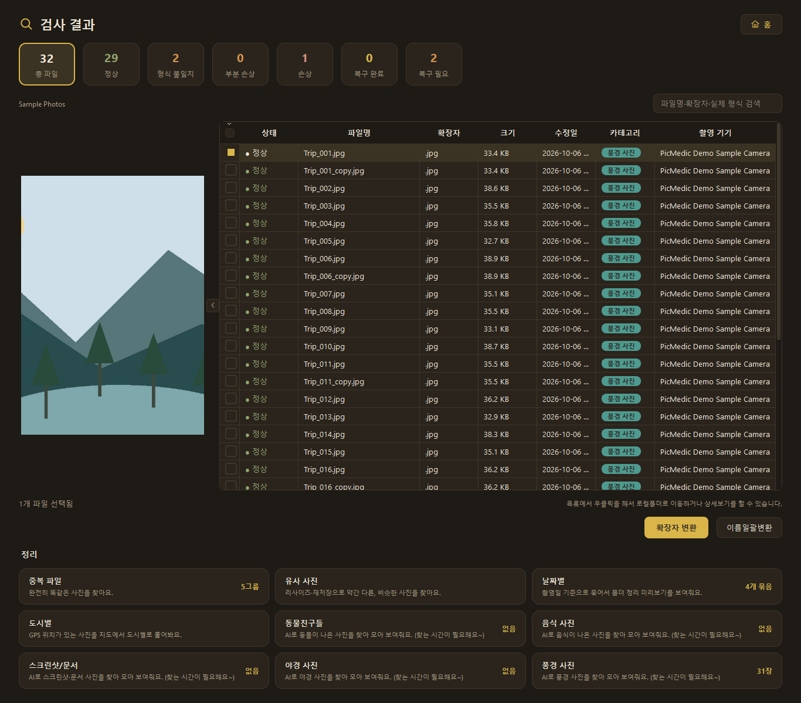
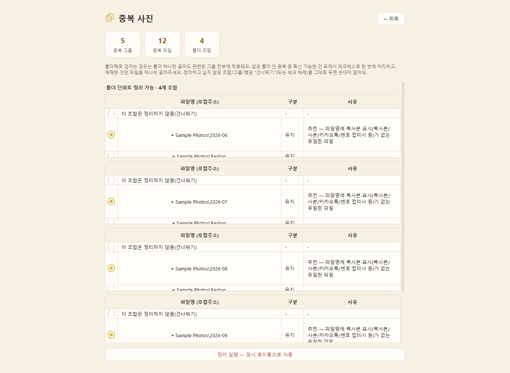
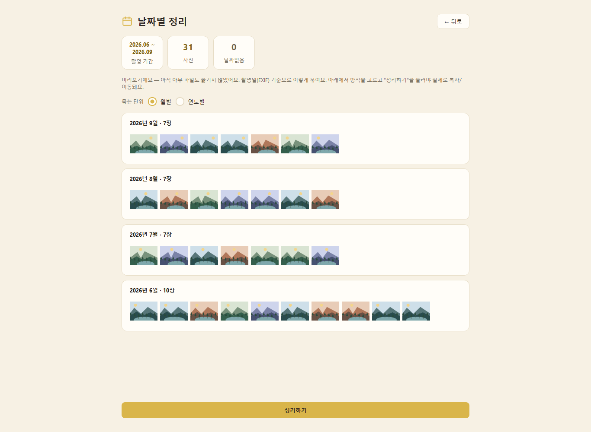
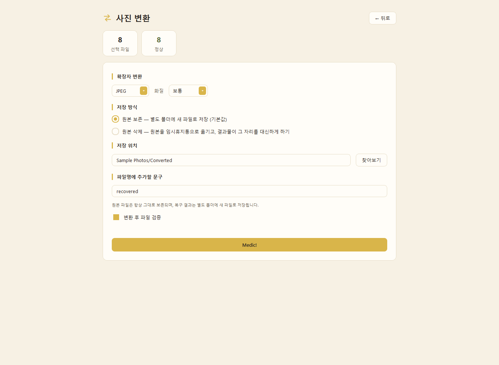

웹버전과 무엇이 다른가요?
웹버전은 브라우저에서 무료 사진 진단·변환·라이브포토 동영상 도구를 제공해요. 픽메딕 데스크톱에서는 폴더 단위 검사, 중복·유사 사진 비교, 날짜·AI 카테고리별 정리, 파일 이름 일괄 변경까지 할 수 있어요.
웹 도구 먼저 사용하기 → PICMEDIC DESKTOP
PICMEDIC DESKTOP
언젠가 정리하려던 사진, 이제 꺼내볼 시간.
검사부터 중복 비교, 변환과 폴더 정리까지 픽메딕 데스크톱과 함께하세요.
한 번 구매 · 구독 없음 · 내 PC에서 사진 처리
폴더를 열면, 할 수 있는 일이 보여요
백업할 때마다 늘어난 폴더, 뒤섞인 형식, 몇 장씩 겹치는 사진.
어디부터 손댈지 몰랐다면, 폴더 하나를 여는 것부터 시작해보세요.
01 / 사진 검사
아이폰에서 옮긴 사진이 안 보일 때, 파일부터 지우지 마세요.
실제 형식과 읽기 가능 여부를 살펴보고, 형식 문제인지 손상인지 확인하세요.

02 / 중복·유사 사진
여러 번 백업한 사진, 조금씩 다르게 찍은 장면들.
중복·유사 사진을 묶어서 보면 하나씩 찾는 수고를 덜 수 있어요.

03 / 폴더 정리
여행 사진과 일상 사진이 한 폴더에 섞여 있어도 괜찮아요.
촬영 날짜를 기준으로 나누고, 정리될 모습을 먼저 확인하세요.

04 / 일괄 변환
HEIC 사진을 다른 형식으로 저장하고 싶을 때도,
여러 사진의 형식을 맞추고 싶을 때도. 필요한 사진을 모아 한 번에 변환하세요.

내 사진을 다루는 방식
사진 검사와 AI 카테고리 분류는 PC에서 처리해요.
주요 사진 관리 기능을 쓰기 위해 계정을 만들 필요도 없어요.
한국어와 English, 라이트 모드와 다크 모드.
익숙한 언어와 편안한 화면으로 사용하세요.
PICMEDIC DESKTOP
3,900원
현재 데스크톱 앱의 전체 기능 · 구독 및 정기 결제 없음
Microsoft Store에서 다운로드 ↗Microsoft Store에서 구매하고 설치할 수 있어요. 최종 판매 가격은 스토어에서 확인해주세요.
웹버전은 브라우저에서 무료 사진 진단·변환·라이브포토 동영상 도구를 제공해요. 픽메딕 데스크톱에서는 폴더 단위 검사, 중복·유사 사진 비교, 날짜·AI 카테고리별 정리, 파일 이름 일괄 변경까지 할 수 있어요.
웹 도구 먼저 사용하기 →이 페이지에서 안내하는 배포 대상은 Windows 10 버전 2004 이상 또는 Windows 11을 사용하는 x64 PC예요. 설치 전에 내 PC의 운영체제와 시스템 종류를 확인해주세요.
네. 읽을 수 있는 HEIC·HEIF 사진을 불러와 JPG 등 지원하는 출력 형식으로 변환할 수 있어요. 여러 장을 함께 변환하는 것도 가능해요. 손상되었거나 읽을 수 없는 파일은 변환하지 못할 수 있어요.
사진 검사와 AI 카테고리 분류는 내 PC 안에서 처리해요. 이 작업을 위해 사진을 외부 서버에 업로드할 필요가 없어요.
픽메딕의 주요 사진 관리 기능을 사용하기 위해 별도의 픽메딕 계정을 만들 필요는 없어요. Microsoft Store에서 앱을 구매하거나 설치할 때의 계정 안내는 스토어에서 확인해주세요.
풍경·음식·동물 등 사진 속 내용을 기준으로 사진을 모아볼 수 있어요. AI가 제안한 분류는 사진에 따라 다를 수 있으니, 결과를 직접 확인한 뒤 정리해주세요.
검사만으로 원본 사진을 바꾸지는 않아요. 변환·정리·이름 변경은 파일에 영향을 줄 수 있는 작업이므로, 실행 전에 대상 사진과 저장 방식을 확인해주세요. 중요한 사진은 따로 백업해두면 좋아요.
파일 상태에 따라 읽거나 변환하지 못할 수 있어요. 검사 결과를 확인한 뒤 필요한 작업을 선택해주세요. 삭제된 파일을 찾아 복구하는 도구는 아니에요.
아니요. 한국 기준 3,900원 한 번 구매로 현재 데스크톱 앱의 전체 기능을 사용할 수 있어요. 구독이나 정기 결제는 없으며, 다른 지역의 판매 가격은 다를 수 있어요.
Microsoft Store에서 다운로드할 수 있어요. 이 페이지의 다운로드 버튼을 누르면 스토어의 구매·설치 화면으로 이동해요. 판매 가격과 시스템 요구 사항을 확인한 뒤 설치해주세요.